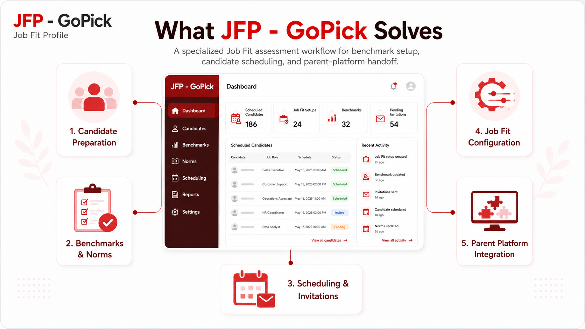

Case Study · HR & Assessment (International)
JFP – GoPick
JFP – GoPick is a specialized Job Fit assessment application connected to the international GoPick HR SaaS platform within the People Dynamics ecosystem. It supports Job Fit-specific benchmark configuration, international compliance (including GDPR and global governing body data rules), norms, competency presets, candidate preparation, and assessment scheduling across Cognitive Ability, Personality, and Occupational Interest dimensions.
My work focuses on modernizing the scheduling workflow, strengthening candidate and account validation, enforcing strict data isolation, separating Job Fit-specific queries, and ensuring atomic cross-system scheduling with the parent GoPick platform.

Specialized International Job Fit Platform
JFP – GoPick focuses specifically on Job Fit assessment preparation and scheduling for international markets. Rather than reproducing the wider account, candidate, reporting, and credit administration responsibilities of GoPick, JFP provides a focused workflow for configuring and initiating Job Fit assessments.
The Job Fit model combines three assessment dimensions—Cognitive Ability, Personality, and Occupational Interest—with benchmark, norm, competency, and scheduling configuration before a candidate is handed into the broader GoPick assessment runtime.
Because it operates within the international GoPick ecosystem, JFP – GoPick must comply with strict international regulatory standards, including GDPR data protection guidelines and global HR assessment governing body rules.
Job Fit Profile Dimensions
- Cognitive Ability Problem-solving capacity, spatial reasoning, verbal logic, and analytical evaluation.
- Personality Behavioral traits, workplace tendencies, interpersonal style, and emotional resilience.
- Occupational Interest Career orientation, role affinity, work environment alignment, and task motivations.
My Role & Ownership Boundary
As a Full-Stack Engineer working on JFP – GoPick, my verified contributions center on modernizing the schedule-test workflow, introducing clearer controller/service/repository/model/view boundaries, improving candidate staging and validation, strengthening account-selection guardrails, supporting candidate import workflows, and isolating Job Fit-specific assessment queries.
This case study does not claim ownership of the original JFP product, proprietary assessment methodology, scoring engine, norms content, report-generation algorithms, or the complete candidate assessment runtime. It focuses only on application and integration work supported by implementation and commit evidence.
International Regulatory & Data Governance
Serving an international candidate base requires strict adherence to global privacy laws and psychometric governing standards. JFP – GoPick enforces tighter operational controls compared to local deployments:
GDPR Compliance Guardrails
Candidate information staged in session or persisted across tenant schemas strictly respects data minimization, explicit consent verification, and automatic retention window expiration.
International Norm Boundaries
Norm lookup and competency evaluation enforce country and regional benchmark presets to prevent cross-border norm misapplication.
Cross-Border Data Isolation
Main user identity data and tenant assessment data are explicitly compartmentalized, ensuring candidate records remain isolated within regional database partitions.
Candidate Scheduling & GoPick Handoff
Client / Admin Scheduler (International)
↓
Account & Region Context Resolution
↓
Candidate Staging & Consent Check
↓
Validation & Session Staging
↓
Job Fit Configuration
┌─────────────┬─────────────┬─────────────┐
│ Cognitive │ Personality │ Occupational│
│ Preset │ Preset │ Interest │
└─────────────┴─────────────┴─────────────┘
↓
International Norm & Competency Selection
↓
Final Schedule Submission
↓
Create User + Candidate + Metadata
↓
Create Assessment Schedule + Authorization
↓
Send Candidate Invitation
↓
Parent GoPick Assessment Runtime
JFP – GoPick's verified responsibility ends primarily around candidate preparation and assessment scheduling. Candidate completion, scoring, and final report processing are owned by the broader parent GoPick environment.
Connected Application & Data Boundary
JFP – GoPick Responsibility
- Job Fit benchmark setup
- JAS / manual / concurrent benchmark flows
- Cognitive preset selection
- Personality preset selection
- Occupational-interest preset selection
- International norm lookup & preset validation
- Competency configuration
- Candidate staging & import processing
- Schedule configuration & validation
Parent GoPick Responsibility
- Account ownership & tenancy
- User identity management
- Persistent candidate records
- Tenant candidate database schema
- Assessment runtime execution
- Consumable meters & credit verification
- Raw & normalized test results
- International report compilation
JFP – GoPick
│
│ Candidate + Assessment Context (GDPR Validated)
│
▼
GoPick Main Database
│
├─ User
├─ Account
├─ Auth Assignment
│
▼
Tenant Database
│
├─ Candidate
├─ Candidate Metadata
└─ Schedule
JFP – GoPick integrates directly with GoPick's database contracts and administrative session context rather than through a standalone REST integration layer. Schedule submission coordinates writes across main and tenant schemas so that JFP configuration becomes an executable assessment schedule within the wider platform.
Mixed Legacy Application Moving Toward Explicit Layers
LEGACY JFP
Flat PHP Scripts
+
Static Model SQL
+
Page Includes
+
Mixed Responsibilities
↓
Incremental Refactor
MODERNIZED JFP AREAS
Controller
↓
Service
↓
Repository (JobFitAssessmentRepository)
↓
Model
↓
View / Components
↓
GoPick Main & Tenant DB Contracts
JFP – GoPick remains a mixed architecture. Long-lived flat PHP scripts, static SQL models, and page-level orchestration continue to coexist with newer schedule-test modules organized around explicit Controller, Service, Repository, Model, and View responsibilities.
Modernization therefore follows the same risk-controlled principle used elsewhere in the ecosystem: touched behavior is moved toward explicit boundaries while stable legacy areas remain operational until future work requires modification.
Candidate Preparation Before Persistence
JFP – GoPick deliberately separates candidate preparation from final schedule persistence. Candidate records are staged in session during the scheduling wizard so that users can validate, review, import, and remove entries before the system creates permanent assessment records.
Validation
Required candidate fields, valid email format, supported gender values, lengths, and import consistency are checked before scheduling.
Duplicate Handling
Import processing identifies invalid or repeated candidate rows before they can enter the final persistence flow.
Account Guardrails
Candidate-registration accounts are filtered using effective expiration rules, reducing the risk of scheduling against expired account contexts.
Account Locking
Once staged candidate records depend on the selected account, account changes are constrained to prevent context mismatches.
Atomic Cross-System Scheduling
BEGIN TRANSACTION
↓
Create User
↓
Create Tenant Candidate
↓
Create Candidate Metadata
↓
Create Schedule
↓
Create Authorization Assignment
↓
Everything successful?
┌───────┴────────┐
NO YES
↓ ↓
ROLLBACK COMMIT
Creating a JFP – GoPick assessment schedule spans multiple related records across parent and tenant data boundaries. Partial success would create orphaned identities, candidates, schedules, or authorization records.
The scheduling workflow therefore executes the related writes transactionally and treats individual insert failure as a failure of the complete operation, rolling back rather than leaving partially created assessment state.
Technical Decisions
1. Keep JFP as a Specialized Application
Context: Job Fit configuration requires workflows different from general account and candidate management.
Decision: Preserve JFP as a focused application integrated with the broader GoPick ecosystem.
Benefit: Keeps specialized assessment configuration isolated.
Tradeoff: Requires explicit integration contracts with parent databases and session context.
2. Direct Parent-Database Integration
Context: GoPick already owns accounts, users, candidates, schedules, and assessment execution.
Decision: Integrate JFP directly through existing main and tenant database contracts.
Benefit: Immediate interoperability with the established platform.
Tradeoff: Strong coupling to existing schema structures.
3. Session-Backed Candidate Staging
Context: Schedulers may prepare multiple candidates before committing assessment records.
Decision: Stage validated candidates in session until final submission.
Benefit: Allows review/import/removal without premature persistent writes.
Tradeoff: Session state requires explicit consistency and validation controls.
4. Incremental 5-Layer Modernization
Context: JFP is an active legacy PHP application and cannot be cleanly rewritten all at once.
Decision: Refactor touched scheduling behavior into Controller → Service → Repository → Model → View boundaries.
Benefit: Improves traceability while preserving working legacy behavior.
Tradeoff: Mixed architectural patterns remain during transition.
Testing & Quality Strategy
Team / Application Verification
- Existing manual workflow testing
- Candidate scheduling verification
- GoPick platform schedule confirmation
Additional Developer Verification
- Playwright tooling where applicable
- PHP-level validation checks
- Repository & service-level checks where implemented
- Runtime verification of refactored schedule flows
Technology Stack & Technical Metadata
Verified Qualitative Outcomes
Clearer Scheduling Architecture
Schedule-test behavior is increasingly separated into explicit controller, service, repository, model, and view responsibilities.
Explicit Job Fit Data Boundary
JFP-specific norms and assessment preset queries are centralized through a dedicated repository rather than distributed across page-level scripts.
Safer Candidate Preparation
Candidate validation and session-backed staging reduce premature database mutation before final scheduling.
Stronger Account Guardrails
Effective account-expiration rules prevent invalid candidate-registration contexts from being presented for scheduling.
Atomic Schedule Creation
Related user, candidate, metadata, schedule, and authorization writes are treated as a single transactional operation rather than independent best-effort inserts.
Key Engineering Takeaway
Connected legacy applications are not made safer simply by separating them into different codebases. The important boundary is making ownership, state transfer, and persistence responsibilities explicit enough that developers can understand where one application ends and another begins.
JFP – GoPick's modernization work reinforced that incremental architecture improvements are most valuable when applied around high-risk workflows—in this case, candidate preparation and cross-system assessment scheduling—rather than attempting broad restructuring without an immediate operational reason.